Solar now.
Water later.
Use otherwise-curtailed solar to make water for later. Test the production plan against demand, outages and storage limits.

Test a reference plan.
Loading reference
A fixed production plan, tested against changing conditions.
- Lowest inventory
- —
Reference and hourly values
Frozen reference production. Synthetic water demand. No plant connection or measured solar recovery. Production stays fixed except during the selected outage.
Initial water 2,000 m³. Reserve 800 m³. End-of-day target 2,000 m³. The same hourly replay runs in the full workspace.
| Time | Original | Selected |
|---|
Before you use it.
What can I do in Aktina?
Review supplied plans, test water delivery and compare forecasts. Import observations, keep review notes and export the evidence.
Is a plant connected?
No. The workspace reviews supplied files and modeled scenarios. Reference examples use historical weather and synthetic inputs.
Who builds the forecasts and schedules?
Stefanos leads forecasting and scheduling. This workspace evaluates the supplied outputs. It sends no commands to a plant.
Does this prove recovered solar electricity?
No. Recovery needs plant-specific eligibility and independent measurements. The workspace shows modeled results under declared assumptions.
Where do my files go?
They stay in this browser. Export a review to share your results and notes.